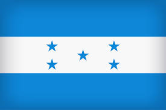

About Me
My name is Margareth, and I was born in Honduras. I live with my family in La Ceiba. I am currently working as a customer service advocate for an insurance company in the USA. I love playing the piano and enjoy learning new things, such as languages. I am currently learning French and Korean.

La Ceiba is a vibrant city located on the northern coast of Honduras, known as the gateway to the Bay Islands. It is famous for its annual carnival, its proximity to Pico Bonito National Park, and beautiful beaches. The city is also a hub for eco-tourism, offering activities such as rafting, hiking, and exploring the Cangrejal River.